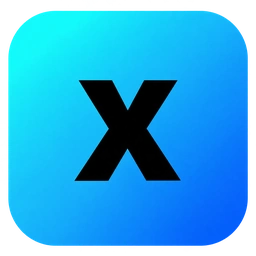

Xray for Chrome
فقط ترافیک مرورگر
آماده اتصال
یک کانفیگ انتخاب کنید
زمان پاسخ اینترنت از مسیر همین کانفیگ
WebRTC غیرپراکسی هنگام اتصال محدود میشود.
افزودن کانفیگ
یک یا چند لینک، هر کدام در یک خط
افزودن سابسکریپشن
فهرست سرورها خودکار دریافت میشود
برای دریافت اشتراک، دسترسی به دامنه همین لینک را تأیید کنید.
پروفایلهای شما
۰مدیریت، تست و انتخاب کانفیگها
سابسکریپشنها
۰از نصب تا اولین اتصال
برای اتصال، افزونه، برنامه مکمل Xray و کانفیگ معتبر لازم است. برنامه مکمل جداگانه روی دستگاه نصب میشود. سرور یا اشتراک همراه افزونه ارائه نمیشود.
اتصال فقط برای پروفایل عادی Chrome است؛ برنامههای دیگر، کل سیستم و حالت ناشناس را پوشش نمیدهد.
دریافت برنامه مکمل۱. دریافت و نصب افزونه
نسخه استور را با Add to Chrome نصب کنید؛ Developer mode لازم نیست. برای نسخه GitHub، بسته کامل را استخراج کنید و در chrome://extensions با Load unpacked فقط پوشه extension را انتخاب کنید.
شناسه نسخه استور ممکن است با نسخه دستی متفاوت باشد. دستورهای زیر شناسه همین افزونه را دارند؛ آنها را از همین راهنما کپی کنید.
شناسه این افزونه۲. نصب برنامه مکمل
دستور نصب و راهنما
Windows 10 یا 11، Chrome 116 به بالا، Windows PowerShell 5.1 و .NET Framework 4.8 لازم است.
ابتدا اتصال را قطع کنید. بسته ویندوز را با دکمه بالا دانلود و کامل استخراج کنید، سپس install-windows.cmd را دوبار کلیک کنید؛ دسترسی Administrator لازم نیست. برای نسخه استور، دستور زیر را که شناسه افزونه را دارد در PowerShell همان پوشه اجرا کنید.
.\install-windows.cmdراهانداز، فقط فایل نصب همین بسته را از مسدودی دانلود خارج میکند و تنظیمات امنیتی کل سیستم را تغییر نمیدهد. محدودیت سازمانی یا نیاز به امضای معتبر از این راه برداشته نمیشود.
اگر Xray از قبل نصب است، هسته موجود حفظ میشود. در نصب تازه، نسخه v25.8.3 دریافت میشود. پس از پیام موفقیت، Chrome را کاملاً بسته و باز کنید.
دانلود ناموفق یا نصب آفلاین
فایل رسمی xray.exe مناسب معماری ویندوز را از پروژه XTLS/Xray-core دریافت و استخراج کنید. مسیر نمونه را با مسیر واقعی فایل جایگزین کنید. گزینه -ForceDownload فقط نسخه v25.8.3 را دوباره دریافت میکند.
.\install-windows.cmd -XrayExe "C:\Path\To\xray.exe"macOS 12 به بالا، Chrome 116 به بالا، Intel یا Apple Silicon. به sudo، Xcode یا Command Line Tools نیاز نیست.
اتصال را قطع کنید. بسته مک را با دکمه بالا دانلود و استخراج کنید، سپس روی install.command راستکلیک کرده Open را بزنید (فقط بار اول لازم است). برای نسخه استور بهجای آن، در Terminal عبارت cd و یک فاصله بنویسید، پوشه استخراجشده را داخل Terminal بکشید، Enter بزنید و دستور زیر را که شناسه افزونه را دارد اجرا کنید.
/bin/zsh ./install.commandپس از نصب موفق، Chrome را کاملاً ببندید و دوباره باز کنید. نصبکننده مک هسته را از انتشارهای رسمی Xray انتخاب میکند؛ برای استفاده از نسخه مشخص، فایل محلی را بدهید.
/bin/zsh ./install.command --xray "/path/to/xray"۳. افزودن کانفیگ و اتصال
در تب افزودن، لینکهای vless://، vmess://، ss:// یا trojan:// را هرکدام در یک خط وارد کنید. برای سابسکریپشن، لینک مستقیم HTTPS را وارد کنید و مجوز دامنه همان لینک را تأیید کنید. فرمت اشتراک باید متن ساده یا Base64 فهرست لینکها باشد.
در اتصال یک کانفیگ انتخاب کنید و اتصال را بزنید. پینگ با درخواست HTTPS از مسیر کانفیگ اندازهگیری میشود، با دو تست همزمان. برای تغییر سرور، ابتدا اتصال فعلی را قطع کنید.
هنگام بازکردن افزونه یا افزودن و بهروزرسانی کانفیگ، نتایج قدیمی پینگ خودکار تازه میشوند. تست از مسیر کانفیگ به www.gstatic.com/generate_204 میرود؛ این مقصد نشانی خروجی پراکسی را میبیند.
رفع خطاهای رایج
برنامه همراه در دسترس نیست: پایان موفق نصب و وجود هسته را بررسی کنید. برای نسخه استور، دستور همین راهنما را کپی کنید تا شناسه درست ثبت شود؛ سپس Chrome را دوباره باز کنید.
پراکسی در اختیار افزونه دیگری است: افزونههای Proxy یا VPN دیگر را موقتاً غیرفعال کنید. اگر دستگاه سازمانی است، با مدیر سیستم هماهنگ کنید.
خطای اتصال یا پینگ: اعتبار کانفیگ، شبکه و ساعت سیستم را بررسی کنید. گزارش خطا در تب اتصال است؛ پیش از ارسال گزارش، رمز، لینک اشتراک و اطلاعات سرور را حذف کنید.
دریافت اشتراک ناموفق است: از لینک نهایی HTTPS بدون تغییر مسیر استفاده کنید. در صورت حذف مجوز سایت، روی بهروزرسانی کلیک کنید تا دسترسی دوباره درخواست شود.
حذف برنامه مکمل
ابتدا اتصال را قطع و Chrome را کاملاً ببندید. در ویندوز uninstall-windows.cmd را دوبار کلیک کنید. در مک روی uninstall.command راستکلیک کرده Open را بزنید، یا دستورهای زیر را از پوشه بسته اجرا کنید.
.\uninstall-windows.cmd/bin/zsh ./uninstall.commandاین کار برنامه مکمل، هسته و گزارشهای محلی آن را حذف میکند. حذف افزونه از chrome://extensions جداست و دادههای ذخیرهشده افزونه را پاک میکند.
درباره ما
Xray for Chrome ·
مدیریت کانفیگها و سابسکریپشنهای Xray برای اتصال مرورگر کروم در ویندوز و مک.
وبسایت آنیسافتanisoft.ir گیتهابgithub.com/pesarakloo حریم خصوصیPrivacy policy کانال تلگرامt.me/xray_chrome